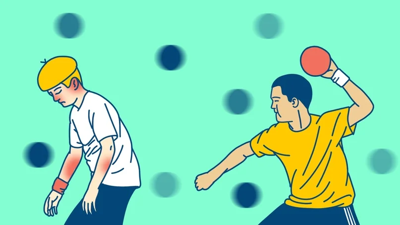
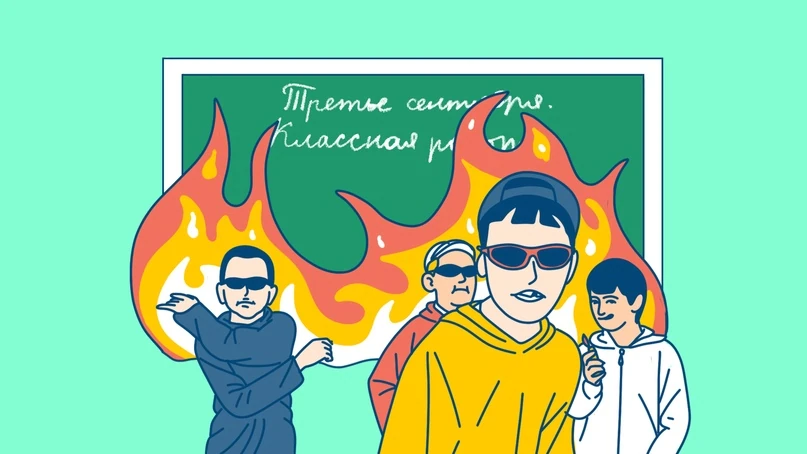

Данила Блюз внезапно решил защитить детишек от Валентины Матвиенко, которая собралась запретить мобильные телефоны в школах. По мнению Данилы, альтернативой этим черным зеркалам будет расцвет ультранасилия на переменах — в доказательство он вспоминает развлечения из своего детства.

Все последние годы проходят под знаменем заботы о детях: прилавки очищают от сигарет и спиртного, из Роспечати пропали журналы с сиськами и мохнатками, из телевизора убирают рекламу дурных привычек, фильмы кастрируют, вырезая из них кровищу, матюги и секс, даже некоторых музыкантов вытравливают из ютуба — все для того, чтобы детишек жизнь не покалечила раньше времени.
На фоне повальной гиперопеки странно смотрится инициатива председателя Совета Федерации Валентины Матвиенко, решившей, что хорошо бы у школьников отобрать смартфоны. “Вместо общения, движения на переменах, как это было раньше, тут же на переменах берут телефоны, играют в игры, они отвыкают общаться друг с другом", — заявила она.
Я, конечно, тот еще обскурант и весь этот ваш прогресс вертел на хую, но тут позволю себе не согласиться с почтенной Валентиной Ивановной.
Я вспоминаю свою школу: мы тоже не общались, мы на переменах хватали транспортиры, огромные линейки и циркули, висевшие под классной доской, и лупили ими друг друга по головам, напрочь выбивая все знания, полученные за прошедший урок.
Черт, я вспоминаю наши школьные забавы — и волосы дыбом встают! Все наши развлечения были связаны с вандализмом или членовредительством. Была, помню, игра под названием “сифа”. Это когда берется тряпка, которой вытирают классную доску, и швыряется в рожу первому попавшемуся однокласснику. Он должен в свою очередь “засифонить” кого-то другого, а иначе до конца дня будет “сифаком”. Название пошло от просторечного наименования неприятной венерической болезни “сифилис” — “сифак”, или “сифон”. К концу перемены все в классе были в белых меловых отпечатках от тряпки. Иногда вместо тряпки бралась какая-то реальная мерзость типа дохлой крысы или поюзанного гондона. Мерзость, конечно, брали не руками, а подковыривали палкой. Чтобы избежать попадания “сифы”, дети скакали по классу или школьному двору, проявляя чудеса ловкости, что твой Нео в “Матрице”. Иногда чудеса проявить не удавалось, и младенец наворачивался с парты, ломая себе шею.
Еще была игра “слон”: одна команда, полусогнувшись, выстраивается в цепочку головой к жопе соседа (эдакая человеческая многоножка), а игроки другой команды запрыгивают на эту многоножку сверху. Когда все игроки запрыгнули (и если вся эта конструкция не развалилась), “слону” нужно пройти десять шагов, чтобы победить. В случае победы команды меняются местами и уже прежние “ездоки” должны стоять раком. Во время игры можно было получить от прыгуна ногой по лбу или по уху, можно было лихо навернуться со “слона”, вывихнуть себе что-нибудь или растянуть — веселья просто уйма!
Вышибалы. Ну, это все знают, в вышибалы играют даже на физре. Наш физрук, когда изнемогал с бодуна, просто давал нам мяч и командовал рубиться в вышибалы — а сам уходил в каморку умирать. До конца урока мы гарантированно носились с мячом, стараясь как можно сильнее покалечить друг друга. Итогом этих развлечений были шишки, синяки, разбитые носы, сломанные очки и выбитые зубы.
Еще была игра с лаконичным названием “жопа”. В дворовых культурах она именуется по-разному и имеет совершенно разные правила, но суть ее везде сводится к одному: проигравшая команда становится к стене или в ворота, нагибается, а команда победителей пинает в них мячом, стараясь попасть неудачникам по жопам. Я не помню сейчас тонкостей и как именно вычислялось количество ударов (кажется, как-то подсчитывалась разница в очках), зато помню, как метко и сильно бил мой сосед по подъезду Рома: несчастные дети валились с ног, будто в них выстрелили мячом из пушки.

Зимой практиковалась игра в “царя горы”. Возле школы коммунальщики после чистки дорог оставляли огромную снежную гору. Суть игры была в том, чтобы забраться на самый ее верх и не дать залезть на гору другим. В пылу азарта веселье превращалось в кровавую бойню: в ход шли снежки и глыбы прессованного снежного наста с дороги. Сам же “царь” нещадно пинал по головам всех атакующих в тщетной попытке удержать трон. Под конец его, конечно, стаскивали за ноги, избивали и заставляли жрать снег.
Еще помню период, когда все пацаны ходили со сбитыми костяшками. Только это были раны не от мордобоя в подпольном бойцовском клубе, а от игры в монеточку. Суть такая: на столе раскручивается стоящая на ребре монетка, и каждый должен щелчком как бы подкрутить ее, не давая упасть. Тот, кто щелкнул по монете слишком сильно (так, что она улетела со стола) или недостаточно сильно (так, что она перестала вращаться), объявляется проигравшим. В качестве наказания он упирается кулаком в парту, а остальные игроки кладут на стол монетку и должны все тем же щелчком попасть по кулаку неудачника. Звучит не больно, но на самом деле монетка часто сдирала кожу и надолго оставляла кровавые ссадины — можно было врать, будто подрался с кем-то. Хотя кому врать-то, если у всех точно такие же ссадины на кулаках.
Ну а если воображения на игры не хватало, на переменах банально дрались или избивали кого-то за школой.
Страстью тогдашних детишек было что-нибудь поджигать или взрывать. Со скуки мы поджигали мусорки. Особым шиком считалось запалить покрышку — в небо летит столб плотного вонючего черного дыма, а старухи из соседней пятиэтажки просовывают морды в форточки и матерятся. Было круто бросить в костер кусок шифера или бутылку — они лопались и осколком кому-нибудь могло вышибить глаз.
Взрывы — особая статья веселья. Раньше петарды не были в широком доступе, зато повсюду валялся карбид. Карбид требовалось покрошить в бутылку, потом нассать в нее (или наоборот, сперва нассать, а потом бросить карбид, не помню точно) и плотно закрыть крышкой. Через минуту в бутылке происходила какая-то неведомая нам реакция, и ее на хуй разрывало! Бабки снова просовывали морды в форточки и принимались материть нас.
Еще была селитра. Не знаю, откуда старшие ребята ее доставали и что с ней делали, но в итоге получалась ракета. Ее поджигали в центре детской площадки и разбегались в разные стороны. Ракета искрила, шипела, дымила, улетала куда-то вбок и бабахала. Или не бабахала, а просто искрила, как бешеная, не помню уже. Было весело и страшно — вдруг ракета отлетит в тебя. В каждом дворе ходила легенда о мальчике, которому такая ракета сожгла все лицо и пришлось пересадить туда кожу с задницы.

Это лишь небольшая часть воспоминаний о развлечениях на переменах. Я, слава богу, не застал всяких стрелок между школами, с применением велосипедных цепей и свинцовых кастетов, не варил молочище или ханку, не поджидал историка после уроков, чтобы дать ему пизды. Этого не было у меня, зато было у многих моих знакомых. Так что, может, от греха подальше, пусть лучше детишки в перерывах между занятиями пырятся в свои мобилки?